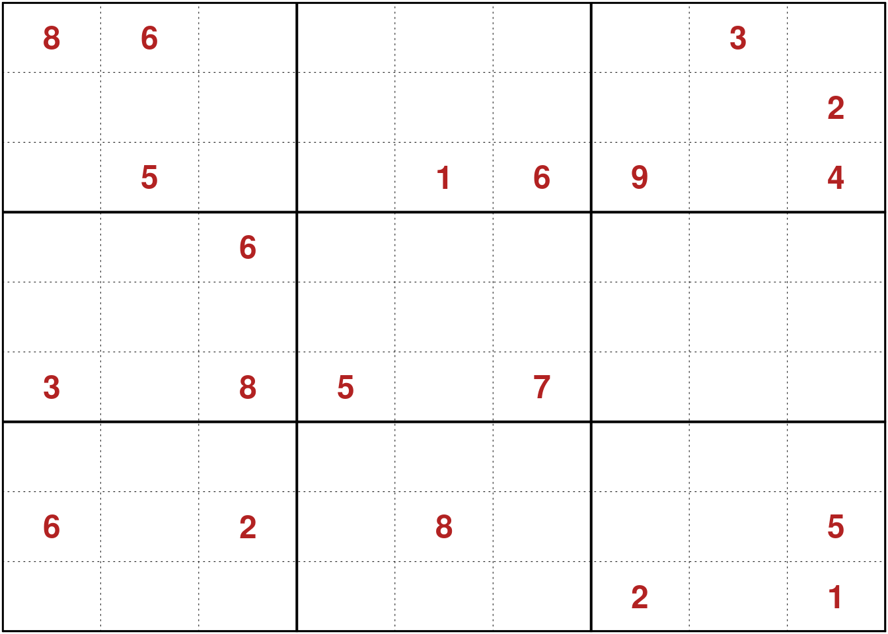
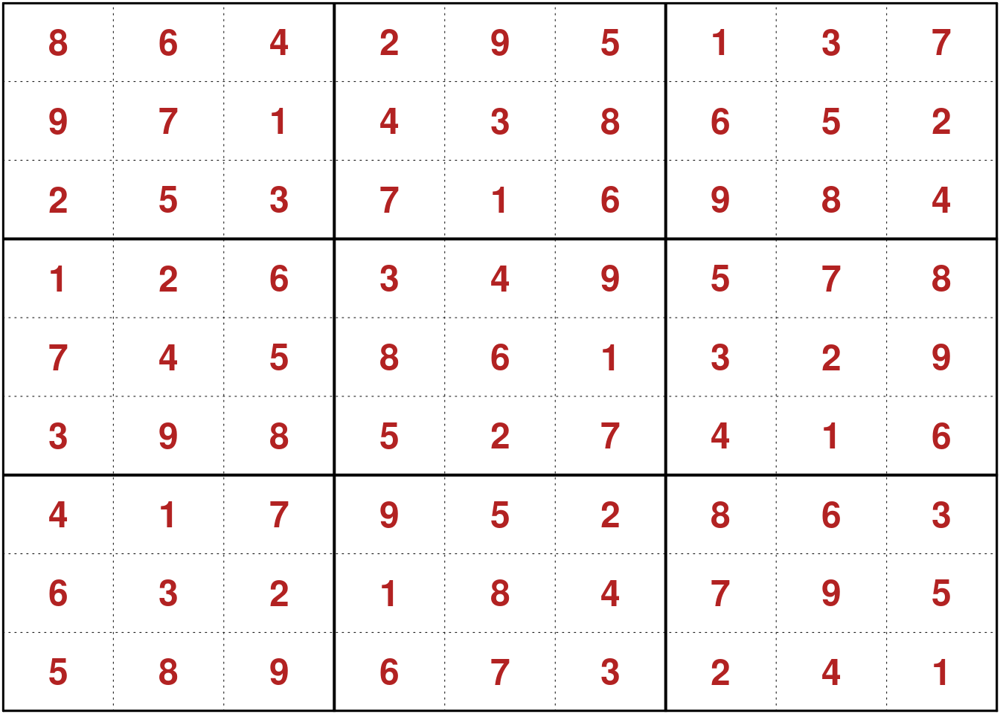

It is well known that the number-placement puzzle Sudoku can be formulated as a binary optimization problem. The following optimization problem formulation is from Bartlett et al. (2008).
\[ \begin{array}{rl} \underset{x}{\text{minimize}} & \mathbb{0}^\top x \\ \text{subject to} & x_{ijk} \in \{0, 1\} \\ \text{only one k in each column:} & \sum_{i=1}^9 x_{ijk} = 1, ~~~~ j = 1:9,~ k = 1:9 \\ \text{only one k in each row:} & \sum_{j=1}^9 x_{ijk} = 1, ~~~~ i = 1:9,~ k = 1:9 \\ \text{only one k in each block:} & \sum_{j = 3 (q - 1) + 1}^{3 q} \sum_{i = 3(p - 1) + 1}^{3 p} x_{ijk} = 1, ~~~~ k = 1:9,~ p = 1:3,~ q = 1:3 \\ \text{exactly one number for each position:} & \sum_{k=1}^9 x_{ijk} = 1, ~~~~ i = 1:9,~ j = 1:9 \\ \text{stating values are fixed:} & x_{ijk} = 1 ~~~ \forall (i, j, k) \\ \end{array} \]
In R the packages sudoku and sudokuAlt can be used to generate and solve Sudoku puzzles.

as.matrix.sudoku <- function(x) matrix(as.numeric(x), 9, 9)
to_col_index <- function(i, j, v) {
(v - 1) * 81 + (i - 1) * 9 + j
}
index_to_triplet <- function(idx) {
.index_to_triplet <- function(idx) {
v <- (idx - 1) %/% 81 + 1
idx <- idx - (v - 1) * 81
i <- (idx - 1)%/% 9 + 1
idx <- idx - (i - 1) * 9
c(i = i, j = idx, v = v)
}
t(sapply(idx, .index_to_triplet))
}
solve_sudoku <- function(M, solver, solve = TRUE, ...) {
stm <- simple_triplet_matrix
seq9_9 <- rep(1:9, 9)
seq9_9e <- rep(1:9, each = 9)
seq81_9e <- rep(seq_len(81), each = 9)
ones729 <- rep.int(1, 9^3)
M <- as.matrix(M)
M[is.na(M)] <- 0
M <- as.simple_triplet_matrix(M)
## setup OP
op <- OP(double(9^3))
## basic setting (fixed coefficients)
j <- mapply(to_col_index, M$i, M$j, M$v)
nfv <- length(M$i) ## number of fixed variables
A0 <- stm(i = seq_len(nfv), j = j, v = rep.int(1, nfv), ncol = 9^3)
LC0 <- L_constraint(A0, eq(nfv), rep.int(1, nfv))
## sum_{i=1:n} x_ijk = 1, j = 1:n, k = 1:n
only_one_k_in_each_column <- function(j, k) {
sapply(1:9, function(i) to_col_index(i, j, k))
}
j <- unlist(mapply(only_one_k_in_each_column, seq9_9e, seq9_9, SIMPLIFY = FALSE))
A1 <- stm(i = seq81_9e, j = j, v = ones729, nrow = 81, ncol = 9^3)
## sum_{j=1:n} x_ijk = 1
only_one_k_in_each_row <- function(i, k) {
sapply(1:9, function(j) to_col_index(i, j, k))
}
j <- unlist(mapply(only_one_k_in_each_row, seq9_9e, seq9_9, SIMPLIFY = FALSE))
A2 <- stm(i = seq81_9e, j = j, v = ones729, nrow = 81, ncol = 9^3)
only_one_k_in_each_submatrix <- function(blocki, blockj, k) {
i <- (blocki - 1) * 3 + 1:3
j <- (blockj - 1) * 3 + 1:3
coo <- expand.grid(i = i, j = j, v = k)
mapply(to_col_index, i = coo$i, j = coo$j, v = coo$v)
}
coo <- expand.grid(i = 1:3, j = 1:3, k = 1:9)
j <- unlist(mapply(only_one_k_in_each_submatrix,
blocki = coo$i, blockj = coo$j, k = coo$k, SIMPLIFY = FALSE))
A3 <- stm(i = seq81_9e, j = j, v = ones729, ncol = 9^3)
## at every position in the matrix must be one value
fill_matrix <- function(i, j) {
sapply(1:9, function(k) to_col_index(i, j, k))
}
j <- unlist(mapply(fill_matrix, i = seq9_9e, j = seq9_9, SIMPLIFY = FALSE))
A4 <- stm(i = seq81_9e, j = j, v = ones729, ncol = 9^3)
A <- rbind(A1, A2, A3, A4)
LC1 <- L_constraint(A, eq(nrow(A)), rep.int(1, nrow(A)))
constraints(op) <- rbind(LC0, LC1)
types(op) <- rep.int("B", 9^3)
if (!solve) return(op)
s <- ROI_solve(op, solver = solver, ...)
sol <- solution(s)
to_sudoku_solution <- function(sol) {
coo <- index_to_triplet(which(as.logical(sol)))
sudoku_solution <- as.matrix(stm(coo[,1], coo[,2], coo[,3]), nrow = 9, ncol = 9)
structure(sudoku_solution, class = c("sudoku", "matrix"))
}
if ( any(lengths(sol) > 1L) & length(sol) > 1L ) {
lapply(solution(s), to_sudoku_solution)
} else {
if ( length(sol) == 1L ) {
to_sudoku_solution(sol[[1L]])
} else {
to_sudoku_solution(sol)
}
}
}
sudoku_is_valid_solution <- function(x) {
.sudoku_is_valid_solution <- function(x) {
stopifnot(inherits(x, "sudoku"))
seq19 <- seq_len(9)
for (i in seq19) {
if ( any(sort(as.vector(x[i, ])) != seq19) ) return(FALSE)
if ( any(sort(as.vector(x[, i])) != seq19) ) return(FALSE)
}
for (i in 1:3) {
for (j in 1:3) {
block <- x[(i-1) * 3 + 1:3, (j-1) * 3 + 1:3]
if ( any(sort(as.vector(block)) != seq19) ) return(FALSE)
}
}
return(TRUE)
}
if ( is.list(x) ) {
sapply(x, .sudoku_is_valid_solution)
} else {
.sudoku_is_valid_solution(x)
}
}We now solve the previously defined Sudoku.
sudoku_solution <- solve_sudoku(sudoku_puzzle, solver = "glpk")
sudoku_is_valid_solution(sudoku_solution)## [1] TRUE
Furthermore it is easy to check if there exist multiple solutions to the Sudoku. Here we only want to obtain up to 10 solution to obtain all set the maximum number of solutions to infinity (nsol_max = Inf).
## [[1]]
##
## + - - - + - - - + - - - +
## | 8 6 4 | 2 9 5 | 1 3 7 |
## | 9 7 1 | 4 3 8 | 6 5 2 |
## | 2 5 3 | 7 1 6 | 9 8 4 |
## + - - - + - - - + - - - +
## | 1 2 6 | 3 4 9 | 5 7 8 |
## | 7 4 5 | 8 6 1 | 3 2 9 |
## | 3 9 8 | 5 2 7 | 4 1 6 |
## + - - - + - - - + - - - +
## | 4 1 7 | 9 5 2 | 8 6 3 |
## | 6 3 2 | 1 8 4 | 7 9 5 |
## | 5 8 9 | 6 7 3 | 2 4 1 |
## + - - - + - - - + - - - +
##
## [[2]]
##
## + - - - + - - - + - - - +
## | 8 6 9 | 2 4 5 | 1 3 7 |
## | 7 4 1 | 8 3 9 | 6 5 2 |
## | 2 5 3 | 7 1 6 | 9 8 4 |
## + - - - + - - - + - - - +
## | 4 9 6 | 1 2 3 | 5 7 8 |
## | 5 2 7 | 4 9 8 | 3 1 6 |
## | 3 1 8 | 5 6 7 | 4 2 9 |
## + - - - + - - - + - - - +
## | 1 7 4 | 6 5 2 | 8 9 3 |
## | 6 3 2 | 9 8 1 | 7 4 5 |
## | 9 8 5 | 3 7 4 | 2 6 1 |
## + - - - + - - - + - - - +
##
## [[3]]
##
## + - - - + - - - + - - - +
## | 8 6 9 | 2 4 5 | 1 3 7 |
## | 4 7 1 | 8 9 3 | 6 5 2 |
## | 2 5 3 | 7 1 6 | 9 8 4 |
## + - - - + - - - + - - - +
## | 7 1 6 | 4 3 8 | 5 2 9 |
## | 5 2 4 | 1 6 9 | 3 7 8 |
## | 3 9 8 | 5 2 7 | 4 1 6 |
## + - - - + - - - + - - - +
## | 1 4 7 | 6 5 2 | 8 9 3 |
## | 6 3 2 | 9 8 1 | 7 4 5 |
## | 9 8 5 | 3 7 4 | 2 6 1 |
## + - - - + - - - + - - - +
##
## [[4]]
##
## + - - - + - - - + - - - +
## | 8 6 4 | 2 9 5 | 1 3 7 |
## | 9 1 3 | 7 4 8 | 6 5 2 |
## | 2 5 7 | 3 1 6 | 9 8 4 |
## + - - - + - - - + - - - +
## | 5 9 6 | 1 2 4 | 3 7 8 |
## | 7 4 1 | 8 3 9 | 5 2 6 |
## | 3 2 8 | 5 6 7 | 4 1 9 |
## + - - - + - - - + - - - +
## | 1 7 9 | 6 5 2 | 8 4 3 |
## | 6 3 2 | 4 8 1 | 7 9 5 |
## | 4 8 5 | 9 7 3 | 2 6 1 |
## + - - - + - - - + - - - +
##
## [[5]]
##
## + - - - + - - - + - - - +
## | 8 6 4 | 2 5 9 | 1 3 7 |
## | 9 1 3 | 4 7 8 | 5 6 2 |
## | 2 5 7 | 3 1 6 | 9 8 4 |
## + - - - + - - - + - - - +
## | 1 4 6 | 8 9 2 | 7 5 3 |
## | 5 7 9 | 1 3 4 | 8 2 6 |
## | 3 2 8 | 5 6 7 | 4 1 9 |
## + - - - + - - - + - - - +
## | 4 3 1 | 9 2 5 | 6 7 8 |
## | 6 9 2 | 7 8 1 | 3 4 5 |
## | 7 8 5 | 6 4 3 | 2 9 1 |
## + - - - + - - - + - - - +
##
## [[6]]
##
## + - - - + - - - + - - - +
## | 8 6 4 | 2 5 9 | 1 3 7 |
## | 1 3 9 | 8 7 4 | 6 5 2 |
## | 2 5 7 | 3 1 6 | 9 8 4 |
## + - - - + - - - + - - - +
## | 5 9 6 | 1 4 8 | 7 2 3 |
## | 4 7 1 | 6 3 2 | 5 9 8 |
## | 3 2 8 | 5 9 7 | 4 1 6 |
## + - - - + - - - + - - - +
## | 7 1 3 | 4 2 5 | 8 6 9 |
## | 6 4 2 | 9 8 1 | 3 7 5 |
## | 9 8 5 | 7 6 3 | 2 4 1 |
## + - - - + - - - + - - - +
##
## [[7]]
##
## + - - - + - - - + - - - +
## | 8 6 4 | 2 5 9 | 1 3 7 |
## | 1 9 7 | 8 3 4 | 6 5 2 |
## | 2 5 3 | 7 1 6 | 9 8 4 |
## + - - - + - - - + - - - +
## | 4 1 6 | 3 9 2 | 5 7 8 |
## | 5 7 9 | 1 4 8 | 3 2 6 |
## | 3 2 8 | 5 6 7 | 4 1 9 |
## + - - - + - - - + - - - +
## | 7 4 1 | 6 2 5 | 8 9 3 |
## | 6 3 2 | 9 8 1 | 7 4 5 |
## | 9 8 5 | 4 7 3 | 2 6 1 |
## + - - - + - - - + - - - +
##
## [[8]]
##
## + - - - + - - - + - - - +
## | 8 6 1 | 9 2 4 | 5 3 7 |
## | 9 3 4 | 8 7 5 | 6 1 2 |
## | 2 5 7 | 3 1 6 | 9 8 4 |
## + - - - + - - - + - - - +
## | 7 4 6 | 2 3 1 | 8 5 9 |
## | 5 2 9 | 6 4 8 | 1 7 3 |
## | 3 1 8 | 5 9 7 | 4 2 6 |
## + - - - + - - - + - - - +
## | 1 9 3 | 4 5 2 | 7 6 8 |
## | 6 7 2 | 1 8 9 | 3 4 5 |
## | 4 8 5 | 7 6 3 | 2 9 1 |
## + - - - + - - - + - - - +
##
## [[9]]
##
## + - - - + - - - + - - - +
## | 8 6 1 | 9 2 4 | 5 3 7 |
## | 9 7 4 | 8 5 3 | 6 1 2 |
## | 2 5 3 | 7 1 6 | 9 8 4 |
## + - - - + - - - + - - - +
## | 5 1 6 | 4 9 8 | 7 2 3 |
## | 4 9 7 | 2 3 1 | 8 5 6 |
## | 3 2 8 | 5 6 7 | 1 4 9 |
## + - - - + - - - + - - - +
## | 1 4 5 | 6 7 2 | 3 9 8 |
## | 6 3 2 | 1 8 9 | 4 7 5 |
## | 7 8 9 | 3 4 5 | 2 6 1 |
## + - - - + - - - + - - - +
##
## [[10]]
##
## + - - - + - - - + - - - +
## | 8 6 1 | 2 9 4 | 5 3 7 |
## | 4 3 9 | 7 5 8 | 6 1 2 |
## | 2 5 7 | 3 1 6 | 9 8 4 |
## + - - - + - - - + - - - +
## | 1 7 6 | 9 2 3 | 4 5 8 |
## | 5 2 4 | 8 6 1 | 7 9 3 |
## | 3 9 8 | 5 4 7 | 1 2 6 |
## + - - - + - - - + - - - +
## | 7 1 5 | 6 3 2 | 8 4 9 |
## | 6 4 2 | 1 8 9 | 3 7 5 |
## | 9 8 3 | 4 7 5 | 2 6 1 |
## + - - - + - - - + - - - +http://www.sudoku.org.uk/DailySudoku.aspLook if this Sudoku has a unique solution.
sudoku_solution <- solve_sudoku(sudoku_puzzle, solver = "msbinlp", nsol_max = 2L)
has_unique_solution <- inherits(sudoku_solution, "sudoku")
has_unique_solution## [1] TRUEURL https://www.semanticscholar.org/paper/An-Integer-Programming-Model-for-the-Sudoku-Problem-Bartlett-Chartier/127ccaf7ebde0c47b36ae78cd1e2233b6061a57f